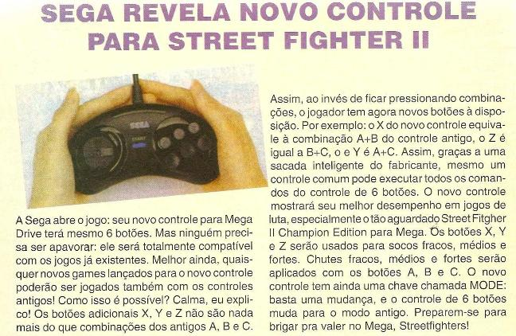
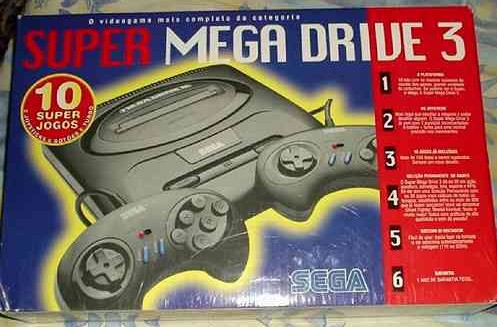

SEGA revela novo controle de 6 botões
:::. Enquanto a Capcom preparava a primeira versão de Street Fighter 2 para o Mega Drive (tá, tá, a segunda, pois a primeira saiu uma nhaca, nem foi lançada), a Sega correu logo para dar um upgrade no já tão adorado controle do Mega, dando a ele uma nova versão com 6 botões e formato que proporcionava bastante conforto à qualquer jogador, de qualquer idade. O scan abaixo é da revista Programes nº 1, apresentando o controle:

Esse controle possui, além dos botões X, Y, Z, o botão Mode, cuja função é fazê-lo se comportar como um controle de 3 botões comum. Isso era nescessário para que alguns jogos fossem executados corretamente, como o Forgoten World. Os botões superiores obviamente só tem serventia em jogos que o utilizem para alguma coisa, já em outros como o Sonic por exemplo, eles não exercem função alguma.
Vale lembrar que houve uma outras versões de controle com 6 botões para o Mega Drive, e que era parecidissima com o controle de 3 botões. Mesmo assim, a versão mais popular e vendidad foi essa aí em cima, mas segue abaixo foto de um desses controles para matar a curiosididade do curió:
|  |
| Um modelo de 6 botões bem incomum de ser encontrado aparecia em dupla nessa caixa deMega Drive da TecToy. |
Dê uma olhadinha no nosso especial Controles do Mega Drive, lá tem muitos outros que te farão chorar de tanta nostalgia
Acesse o Trombone e comente sobre essa matéria!


Como concertar o seu controle
Um problema bastante comum em controles antigos é o mal funcionamento de um ou outro botão. A boa noticia é que tem como arrumar isso de um jeito facil facil :D
Um problema bastante comum em controles antigos é o mal funcionamento de um ou outro botão. A boa noticia é que tem como arrumar isso de um jeito facil facil :D
Especial: controles do Mega Drive
O
controle do Mega de 3 botões é pra lá de
conhecido, serviu de inspiração para outros consoles, e
faz sucesso até hoje pelo seu estilão único. Mas
nem só de bumerangue vive o Mega, tem muitos outros controles
para ele...